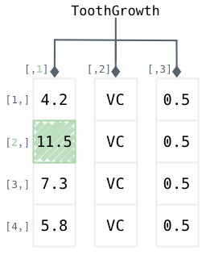
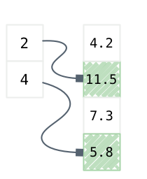
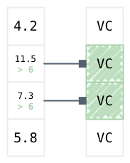
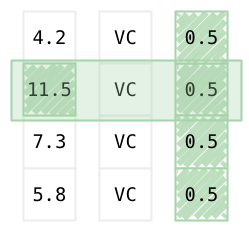
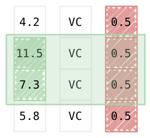
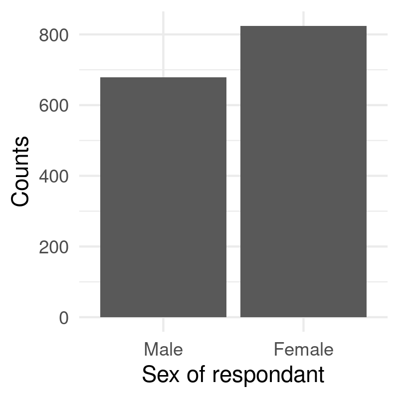
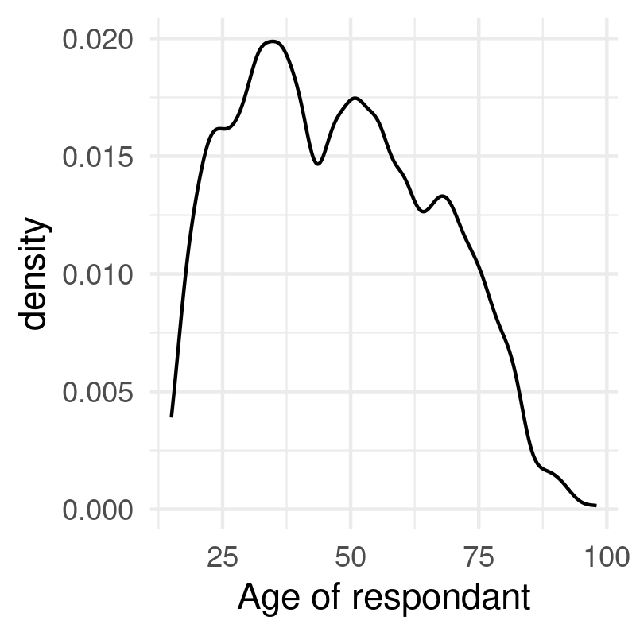
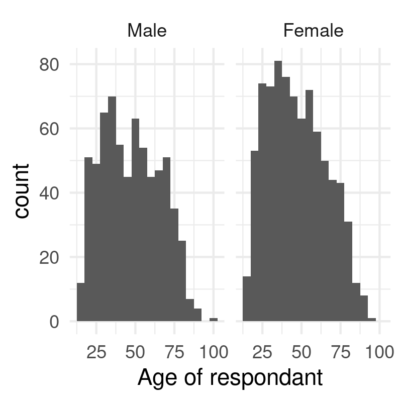
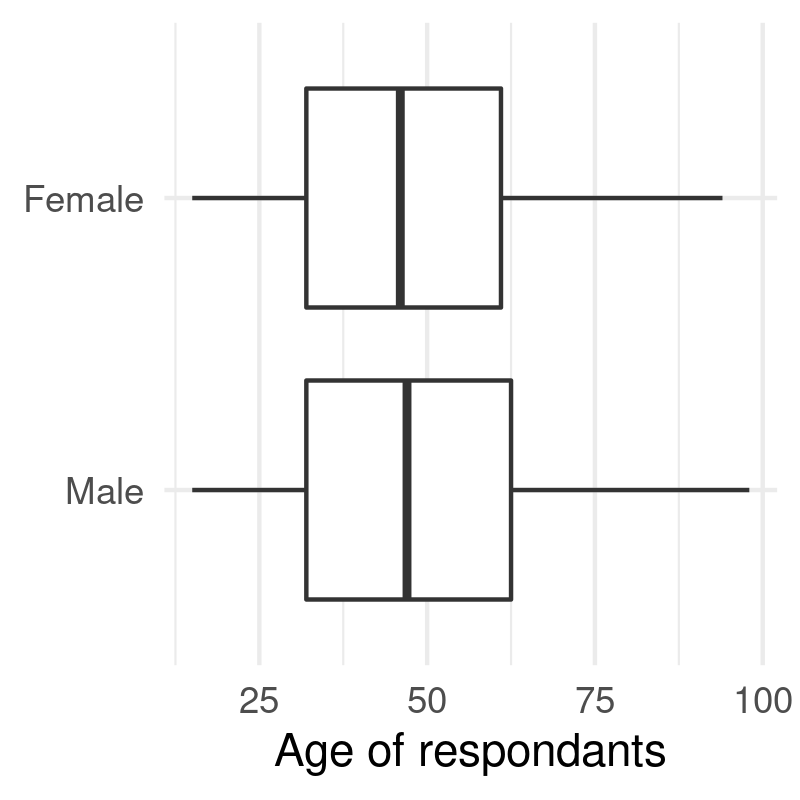

Introduction to R
This introduction to the R language aims at understanding how to represent and manipulate data objects as commonly found in data science, to provide basic summary statistic and to build relevant graphical representation of the data [1].
Important notice: Only base commands are discussed here, not the tidyverse. A separate cheatsheet is available for the ggplot2 package.
1 Installing R and RStudio
The R statistical package can be installed from CRAN. Be sure to also download RStudio as it provided a full-featured user interface to interact with R. To use Jupyter notebook, you will also need the IR kernel.
1.1 Useful additional packages
This tutorial mainly relies on core facilities that come along so called R base packages. However, it is possible to install additional packages and, in particular, the ggplot2 package, as shown below:
install.packages("ggplot2")
1.2 Setup
The following setup will be used for graphical displays:
library(ggplot2) theme_set(theme_minimal())
Note that you need to load the ggplot2 package only once, at the start of your R session.
2 Getting started
2.1 Variables
There are fundamentally two kind of data structures in statistics-oriented programming languages: numbers and strings. Numbers can be integers or real numbers and they are used to represent values observed for a continuous or discrete statistical variable, while strings are everything else that cannot be represented as numbers or list of numbers, e.g. address of a building, answer to an open-ended question in a survey, etc.
Here is how we can create a simple variable, say x, to store a list of 5 numerical values:
x <- c(1, 3, 2, 5, 4)
Note that the symbol <- stands for the recommended assignment operator, yet it is possible to use = to assign some quantity to a given variable, which appears on the left hand side of the above expression. Also, the series of values is reported between round brackets, and each values is separated by a comma. From now on, we will talk interchangeably of values or of observations as if we were talking of a measure collected on a statistical unit.
Some properties of this newly created variable can be queried online, e.g. how many elements does x has or how those elements are represneted in R:
length(x) typeof(x)
[1] 5 [1] "double"
It should be noted that x contains values stored as real numbers (double) while they may just be stored as integers. It is however possible to ask R to use truly integer values:
x <- c(1L, 3L, 2L, 5L, 4L) typeof(x)
[1] "integer"
The distinction between 32 bits integers and reals will not be that important in common analysis tasks, but it is important to keep in mind that it is sometimes useful to check whether data are represented as expected, especially in the case of categorical variables, also called 'factor' in R parlance (more on this latter).
The list of numbers we stored in x is called a vector, and it is one of the building block of common R data structures. Oftentimes, we will need richer data structures, especially two-dimensional objects, like matrix or data frame, or higher-dimensional objects such as array or list.

Figure 1: Common data structures in R
2.2 Vectors
The command c ('concatenate') we used to create our list of integers will be very useful when it comes to pass multiple options to a command. It can be nested into another call to c like in the following example:
x <- c(c(1, 2, 3), c(4, 5, 6), 7, 8)
In passing, note that since we use the same name for our newly created variable, x, the old content referenced in x (1, 3, 2, 5, 4) is definitively lost. Once you have a vector of values, you can access each item by providing the (one-based) index of the item(s), e.g.:
x[1] x[3] x[c(1,3)] x[1:3]
[1] 1 [1] 3 [1] 1 3 [1] 1 2 3
A convenient shorhand notation for regular sequence of integers is start:end, where start is the starting value and end is the last value (both included). Hence, c(1,2,3,4) is the same as 1:4. This is useful when one wants to preview the first 3 or 5 values in a vector, for example. A more general function to work with regular sequence of numbers is seq. Here is an example of use:
seq(1, 10) seq(1, 10, by = 2) seq(0, 10, length = 5)
[1] 1 2 3 4 5 6 7 8 9 10 [1] 1 3 5 7 9 [1] 0.0 2.5 5.0 7.5 10.0
Updating content of a vector can be done directly by assigning a new value to one of the item:
x[3] <- NA
In the above statement, the third item has been assigned a missing value, which is coded as NA ('not available') in R. Again, there is no way to go back to the previous state of the variable, so be careful when updating the content of a variable.
The presence of missing data is important to check before engaging into any serious statistical stuff. The is.na function can be used to check for the presence of any missing value in a variable, while which will return the index that matches a TRUE result, if any:
is.na(x) which(is.na(x))
[1] FALSE FALSE TRUE FALSE FALSE FALSE FALSE FALSE [1] 3
Notice that many functions like is.na, or which, act in a vectorized way, meaning that you don't have to iterate manually over each item in the vector. Moreover, function calls can be nested one into the other. In the latter R expression, which is actually processing the values returned by the call to is.na.
2.3 Vectors and random sampling
The sample function allows to randomly shuffle an existing vector or to generate a sequence of random numbers. Whenever we rely on the random number generator (RNG), it is recommend to set the seed of the RNG in order to ensure that those pseudo-random sequence could be reproduced later. Here is an illustration:
s <- c(1, 4, 2, 3, 8) sample(s)
[1] 1 4 2 3 8
sample(1:10, size = 5) sample(0:1, size = 10, replace = TRUE)
[1] 8 9 1 2 10 [1] 1 1 0 1 1 0 0 1 0 0
In summary, sample(1:n, size = n) returns a permutation of the n elements, while sample(1:n, size = n, replace = TRUE) provides a bootstrap sample of the original data.
2.4 Sorting
Sorting a list of values or finding the index or rank of any value in a vector are common tasks in statistical programming. It is different from computing ranks of observed values, which is handled by the rank function. The two main instructions to sort a list of values and to get the index of the sorted item are sort and order, respectively:
z <- c(1, 6, 7, 2, 8, 3, 9, 4, 5) sort(z) order(z)
[1] 1 2 3 4 5 6 7 8 9 [1] 1 4 6 8 9 2 3 5 7
2.5 Data frames
Data frames are one of the core data structures to store and represent statistical data. Many routine functions that are used to load data stored in flat files or databases or to preprocess data stored in memory rely on data frames. Likewise, graphical commands such as those found in the ggplot2 package generally assumes a data frame as input. The same applies to functions used in statistical modeling (lm, glm, etc.).
In a data frame, observations are arranged in rows and variables are arranged in columns. Each variable can be viewed as a single vector, but those variables are all recorded into a common data structure, each with an unique name. Moreover, each column, or variable, can be of a different type–numeric, factor, character or boolean, which makes data frame slightly different from 'matrix' object where only values of the same type can be stored.
Here is an example of a built-in data frame, readily available by using the command data:
data(ToothGrowth) head(ToothGrowth)
len supp dose 1 4.2 VC 0.5 2 11.5 VC 0.5 3 7.3 VC 0.5 4 5.8 VC 0.5 5 6.4 VC 0.5 6 10.0 VC 0.5
str(ToothGrowth)
'data.frame': 60 obs. of 3 variables: $ len : num 4.2 11.5 7.3 5.8 6.4 10 11.2 11.2 5.2 7 ... $ supp: Factor w/ 2 levels "OJ","VC": 2 2 2 2 2 2 2 2 2 2 ... $ dose: num 0.5 0.5 0.5 0.5 0.5 0.5 0.5 0.5 0.5 0.5 ...
While head allows to preview the first 6 lines of a data frame, str provides a concise overview of what's available in the data frame, namely: the name of each variable (column), its mode of representation, et the first 10 observations (values).
The dimensions (number of lines and columns) of a data frame can be verified using dim (a shortcut for the combination of nrows and ncols):
dim(ToothGrowth)
[1] 60 3
To access any given cell in this data frame, we will use the indexing trick we used in the case of vectors, but this time we have to indicate the line number as well as the column number, or name: Hence, ToothGrowth[i,j] means the value located at line i and column j, while ToothGrowth[c(a,b),j] would mean values at line a and b for the same column j.

Figure 2: Representation of a data frame in R
Here is how we can retrieve the second observation in the first column:
ToothGrowth[2,1]
[1] 11.5
Since the columns of a data frame have names, it is equivalent to use ToothGrowth[2,1] and ToothGrowth[2,"len"]. In the latter case, variable names must be quoted. Column names can be displayed using colnames or names (in the special case of data frames), while row names are available via rownames. Row names can be used as unique identifier for statistical units, but best practice is usually to store unique IDs as characters or factor levels in a dedicated column in the data frame.
Since we know that we can use c to create a list of numbers, we can use c to create a list of line numbers to look for. Imagine you want to access the content of a given column (len, which is the first column, numbered 1), for lines 2 and 4: (c(2, 4)):

Figure 3: Vector indexing
Here is how we would do in R:
ToothGrowth[c(2,4),1]
[1] 11.5 5.8
This amounts to 'indexed selection', meaning that we need to provide the row (or column) numbers, while most of the time we are interested in criterion-based indexation, that is: "which observation fullfills a given criterion." We generally call this a 'filter'. Since most R operations are vectorized, this happens to be really easy. For instance, to display observations on supp that satisfy the condition len > 6, we would use:
head(ToothGrowth$supp[ToothGrowth$len > 6])
[1] VC VC VC VC VC VC Levels: OJ VC

Figure 4: Selecting elements in a data frame
Likewise, it is possible to combine different filters using logical operators: & stands for 'and' (logical conjunction) and | stands for 'or' (logical disjonction); logical equality is denoted as == while its negation reads !=. Here is an example where we want to select observations that satisfy a given condition on both the dose (dose = 0.5) and len (len > 10) variables:

Figure 5: Using filters on a data frame
In R, we would write:
ToothGrowth[ToothGrowth$len > 10 & ToothGrowth$dose < 1,]
len supp dose
2 11.5 VC 0.5
7 11.2 VC 0.5
8 11.2 VC 0.5
31 15.2 OJ 0.5
32 21.5 OJ 0.5
33 17.6 OJ 0.5
35 14.5 OJ 0.5
39 16.5 OJ 0.5
You will soon realize that for complex queries this notation become quite cumbersome: all variable must be prefixed by the name of the data frame, which can result in a very long statement. While it is recommended practice for programming or when developing dedicated package, it is easier to rely on subset in an interactive session. The subset command asks for three arguments, namely the name of the data frame we are working on, the rows we want to select (or filter), and the columns we want to return. The result of a call to subset is always a data frame.

Figure 6: Subsetting a data frame by row and column
Here is an example of use:
subset(ToothGrowth, len > 10 & dose < 1)
len supp dose
2 11.5 VC 0.5
7 11.2 VC 0.5
8 11.2 VC 0.5
31 15.2 OJ 0.5
32 21.5 OJ 0.5
33 17.6 OJ 0.5
35 14.5 OJ 0.5
39 16.5 OJ 0.5

Figure 7: Subsetting a data frame: Illustration of joint filters
It is also possible to use the technique discussed in the case of vectors to sort a data frame in ascending or descending order according to one or more variables. Here is an example using the len variable:
head(ToothGrowth) head(ToothGrowth[order(ToothGrowth$len),])
len supp dose 1 4.2 VC 0.5 2 11.5 VC 0.5 3 7.3 VC 0.5 4 5.8 VC 0.5 5 6.4 VC 0.5 6 10.0 VC 0.5 len supp dose 1 4.2 VC 0.5 9 5.2 VC 0.5 4 5.8 VC 0.5 5 6.4 VC 0.5 10 7.0 VC 0.5 3 7.3 VC 0.5
The which function can also be used to retrieve a specific observation in a data frame, like in the following instruction:
which(ToothGrowth$len < 8)
[1] 1 3 4 5 9 10
3 Statistical summaries
As explained above, the str function is useful to check a given data structure, and individual properties of a data frame can be queried using dedicated functions, e.g. nrow or ncol. Now, to compute statistical quantities on a variable, we can use dedicated functions like mean (arithmetical mean), sd (standard deviation; see also var), IQR (interquartile range), range (range of values; see also min and max), or the summary function, which computes a five-point summary in the case of a numerical variable or a table of counts for categorical outcomes.
3.1 Univariate case
Here are some applications in the case we are interested in summarizing one variable at a time:
mean(ToothGrowth$len) range(ToothGrowth$len) c(min(ToothGrowth$len), max(ToothGrowth$len)) table(ToothGrowth$dose)
[1] 18.81333 [1] 4.2 33.9 [1] 4.2 33.9 0.5 1 2 20 20 20
summary(ToothGrowth)
Of course, the above functions can be applied to a subset of the original data set:
mean(ToothGrowth$len[ToothGrowth$dose == 1]) table(ToothGrowth$dose[ToothGrowth$len < 20])
[1] 19.735 0.5 1 2 19 11 1
3.2 Bivariate case
If we want to summarize a numerical variable according the values that a factor variable takes, we can use tapply or aggregate. The latter expects a 'formula' describing the relation between the variables we are interested in: the response variable or outcome appears on the left-hand side (LHS), while the factors or descriptors are listed in the right-hand side (RHS). The last argument to aggregate is the function we want to apply to each chunk of observations defined by the RHS. Here is an example of use:
aggregate(len ~ dose, data = ToothGrowth, mean) aggregate(len ~ supp + dose, data = ToothGrowth, mean)
dose len 1 0.5 10.605 2 1.0 19.735 3 2.0 26.100 supp dose len 1 OJ 0.5 13.23 2 VC 0.5 7.98 3 OJ 1.0 22.70 4 VC 1.0 16.77 5 OJ 2.0 26.06 6 VC 2.0 26.14
Note that only one function can be applied to the 'formula'. Even if it possible to write a custom function that computes the mean and standard deviation of a variable, both results will be returned as single column in the data frame returned by aggregate. There do exist other ways to perform such computation, though (see, e.g., the plyr, dplyr or Hmisc packages, to name a few), if the results are to be kept in separate variables for later. This, however, does not preclude from using aggregate for printing multivariate results in the console:
aggregate(len ~ dose, data = ToothGrowth, summary) f <- function(x) c(mean = mean(x), sd = sd(x)) aggregate(len ~ dose, data = ToothGrowth, f)
dose len.Min. len.1st Qu. len.Median len.Mean len.3rd Qu. len.Max. 1 0.5 4.200 7.225 9.850 10.605 12.250 21.500 2 1.0 13.600 16.250 19.250 19.735 23.375 27.300 3 2.0 18.500 23.525 25.950 26.100 27.825 33.900 dose len.mean len.sd 1 0.5 10.605000 4.499763 2 1.0 19.735000 4.415436 3 2.0 26.100000 3.774150
The table functions also works with two (or even three) variables:
table(ToothGrowth$dose, ToothGrowth$supp)
OJ VC
0.5 10 10
1 10 10
2 10 10
If formulas are to be preferred, the xtabs function provides a convenient replacement for table:
xtabs(~ dose + supp, data = ToothGrowth)
supp
dose OJ VC
0.5 10 10
1 10 10
2 10 10
In either case, frequencies can be computed from the table of counts using prop.table, using the desired margin (row=1, column=2) in the bivariate case:
prop.table(table(ToothGrowth$dose)) prop.table(table(ToothGrowth$dose, ToothGrowth$supp), margins = 1)
0.5 1 2
0.3333333 0.3333333 0.3333333
Erreur dans prop.table(table(ToothGrowth$dose, ToothGrowth$supp), margins = 1) :
argument inutilisé (margins = 1)
4 Practical use case: The ESS survey
The data directory includes three RDS files related to the European Social Survey (ESS). This survey first ran in 2002 (round 1), and it is actually renewed every two years. The codebook can be downloaded, along other data sheets, on the main website.
There are two files related to data collected in France (round 1 or rounds 1-5, ess-*-fr.rds) and one file for all participating countries (ess-one-round.rds).
French data
Assuming the data directory is available in the current working directory, here is how we can load French data for round 1:
WD <- "." filepath <- paste0(WD, "/data/ess-one-round-fr.rds") d <- readRDS(filepath) head(as.data.frame(d[1:10]))
name essround edition proddate cntry idno tvtot tvpol rdtot rdpol
1 ESS1e06_6 1 6.6 01.12.2018 FR 10001 3 2 1 0
2 ESS1e06_6 1 6.6 01.12.2018 FR 10002 4 3 2 2
3 ESS1e06_6 1 6.6 01.12.2018 FR 10003 0 NA 7 4
4 ESS1e06_6 1 6.6 01.12.2018 FR 10004 5 2 1 0
5 ESS1e06_6 1 6.6 01.12.2018 FR 10005 2 2 0 NA
6 ESS1e06_6 1 6.6 01.12.2018 FR 10006 3 2 0 NA
table(d$yrbrn)
1905 1909 1911 1912 1913 1914 1915 1916 1917 1918 1919 1920 1921 1922 1923 1924 1925 1926 1927 1928 1 1 2 3 1 3 3 3 1 2 4 9 10 13 10 9 14 15 10 22 1929 1930 1931 1932 1933 1934 1935 1936 1937 1938 1939 1940 1941 1942 1943 1944 1945 1946 1947 1948 13 18 17 16 22 21 19 23 17 22 14 21 14 28 21 23 18 20 30 30 1949 1950 1951 1952 1953 1954 1955 1956 1957 1958 1959 1960 1961 1962 1963 1964 1965 1966 1967 1968 18 28 24 31 25 29 17 30 29 20 20 16 22 25 37 19 28 34 32 27 1969 1970 1971 1972 1973 1974 1975 1976 1977 1978 1979 1980 1981 1982 1983 1984 1985 1986 1987 1988 30 28 35 30 21 29 23 25 23 23 25 27 23 27 14 20 20 16 5 5
summary(d$agea)
Min. 1st Qu. Median Mean 3rd Qu. Max. 15.00 32.00 46.00 47.32 61.00 98.00
Let us focus on the following list of variables, readily available in the file ess-one-round-29vars-fr.rds:
tvtot: TV watching, total time on average weekdayrdtot: Radio listening, total time on average weekdaynwsptot: Newspaper reading, total time on average weekdaypolintr: How interested in politicstrstlgl: Trust in the legal systemtrstplc: Trust in the policetrstplt: Trust in politiciansvote: Voted last national electionhappy: How happy are yousclmeet: How often socially meet with friends, relatives or colleaguesinmdisc: Anyone to discuss intimate and personal matters withsclact: Take part in social activities compared to others of same agehealth: Subjective general healthctzcntr: Citizen of countrybrncntr: Born in countryfacntr: Father born in countrymocntr: Mother born in countryhhmmb: Number of people living regularly as member of householdgndr: Genderyrbrn: Year of birthagea: Age of respondent, calculatededulvla: Highest level of educationeduyrs: Years of full-time education completedpdjobyr: Year last in paid jobwrkctr: Employment contract unlimited or limited durationwkhct: Total contracted hours per week in main job overtime excludedmarital: Legal marital statusmartlfr: Legal marital status, Francelvghw: Currently living with husband/wife
4.1 Recoded French data
Note that variables in the file ess-one-round-29vars-fr.rds have been recoded and categorical variables now have proper labels. See the script file ess-one-round-29vars-fr.r to see what has been done to the base file.
filepath <- paste0(WD, "/data/ess-one-round-29vars-fr.rds") d29 <- readRDS(filepath) head(d29)
tvtot rdtot nwsptot polintr
1 More than 1 hour, up to 1,5 hours Less than 0,5 hour No time at all Not at all interested
2 More than 1,5 hours, up to 2 hours 0,5 hour to 1 hour Less than 0,5 hour Hardly interested
3 No time at all More than 3 hours 0,5 hour to 1 hour Not at all interested
4 More than 2 hours, up to 2,5 hours Less than 0,5 hour No time at all Quite interested
5 0,5 hour to 1 hour No time at all No time at all Hardly interested
6 More than 1 hour, up to 1,5 hours No time at all Less than 0,5 hour Quite interested
trstlgl trstplc trstplt vote happy sclmeet inmdisc sclact
1 6 8 5 <NA> 10 <NA> Yes About the same
2 5 3 3 Yes 10 Every day Yes About the same
3 5 No trust at all No trust at all Yes 3 Every day Yes About the same
4 5 3 3 Yes 6 Once a month Yes Less than most
5 5 8 No trust at all <NA> 10 Several times a week No More than most
6 7 8 7 <NA> 5 Never Yes About the same
health ctzcntr brncntr facntr mocntr hhmmb gndr yrbrn agea
1 Good No No No Yes 2 Female 1940 63
2 Good Yes Yes Yes Yes 2 Male 1967 36
3 Very good Yes Yes No Yes 5 Male 1967 36
4 Fair Yes Yes Yes Yes 1 Female 1926 77
5 Fair Yes No No No 3 Female 1921 82
6 Fair Yes Yes Yes Yes 2 Male 1951 52
edulvla eduyrs pdjobyr wrkctr wkhct marital martlfr
1 Less than lower secondary education (ISCED 0-1) 10 1997 <NA> 35 <NA> Married
2 Upper secondary education completed (ISCED 3) 12 NA <NA> 35 <NA> Married
3 Upper secondary education completed (ISCED 3) 20 NA <NA> NA <NA> Married
4 Less than lower secondary education (ISCED 0-1) 8 1974 <NA> 25 <NA> Widowed
5 Less than lower secondary education (ISCED 0-1) 0 NA <NA> NA <NA> Widowed
6 Upper secondary education completed (ISCED 3) 17 2001 <NA> 48 <NA> Separated
lvghw
1 Yes
2 Yes
3 Yes
4 <NA>
5 <NA>
6 <NA>
First, let us look at the distribution of the gndr variable, using a simple bar chart:
summary(d29$gndr)
Male Female 679 824
p <- ggplot(data = d29, aes(x = gndr)) + geom_bar() + labs(x = "Sex of respondant", y = "Counts") p

Now, let's look at the distribution of age. The ggplot2 package offers a geom_density function but it is also possible to draw a line using the precomputed empirical density function, or to let ggplot2 compute the density function itself using the stat= option. Here is how it looks:
summary(d29$agea)
Min. 1st Qu. Median Mean 3rd Qu. Max. 15.00 32.00 46.00 47.32 61.00 98.00
p <- ggplot(data = d29, aes(x = agea)) + geom_line(stat = "density", bw = 2) + labs(x = "Age of respondant") p

The distribution of age can also be represented as an histogram, and ggplot2 makes it quite easy to split the display depending on the sex of the respondants, which is called a 'facet' in ggplot2 parlance:
p <- ggplot(data = d29, aes(x = agea)) + geom_histogram(binwidth = 5) + facet_grid(~ gndr) + labs(x = "Age of respondant") p

Finally, a boxplot might also be an option, especially when we want to compare the distribution of a numerical variable across levels of a categorical variable. The coord_flip instruction is used to swap the X and Y axes, but keep in mind that x= and y= labels still refer to the x and y variable defined in the aes:
p <- ggplot(data = d29, aes(x = gndr, y = agea)) + geom_boxplot() + coord_flip() + labs(x = NULL, y = "Age of respondants") p

Sidenote: In the above instructions, we used the following convention to build a ggplot2 object:
- we assign to a variable, say
p, the call to ggplot2 plus any further instructions ('geom', 'scale', 'coord_', etc.) using the+operator; - we use only one
aesstructure, when callingggplot, so that it makes it clear what are the data and what variables are used; - we display the graph at the end, by simpling calling our variable
p.
Yet, it is possible to proceed in many different ways, depending on your taste and needs. The following instructions are all valid expressions and will yield the same result:
ggplot(data = d29, aes(x = gndr, y = agea, color = vote)) + geom_boxplot() p <- ggplot(data = d29, aes(x = gndr, y = agea, color = vote)) p <- p + geom_boxplot() + labs(x = "Gender") p p <- ggplot(data = d29, aes(x = gndr, y = agea)) p + geom_boxplot(aes(color = vote)) + labs(x = "Gender")
Moreover, it is also possible to use the quick one-liner version of ggplot, namely qplot:
qplot(x = gndr, y = agea, data = d29, color = vote, geom = "boxplot") + labs(x = "Gender")
or even:
qplot(x = gndr, y = agea, data = d29, color = vote, geom = "boxplot", xlab = "Gender")
Further details are available in the handout lang-r-ggplot.
4.2 Data from other countries
Data from all other participating countries can be loaded in the same manner:
filepath <- paste0(WD, "/data/ess-one-round.rds")
db <- readRDS(filepath)
cat("No. observations =", nrow(db), "\n")
table(db$cntry)
observations = 40856 AT BE CH CZ DE DK ES FI GB GR HU IE IL IT LU NL NO PL PT SE 2257 1899 2040 1360 2919 1506 1729 2000 2052 2566 1685 2046 2499 1207 1552 2364 2036 2110 1511 1999 SI 1519
Since French data are (deliberately) missing from this dataset, we can append them to the above data frame as follows:
db <- rbind.data.frame(db, d)
cat("No. observations =", nrow(db), "\n")
observations = 42359
db$cntry <- factor(db$cntry) table(db$cntry)
AT BE CH CZ DE DK ES FI FR GB GR HU IE IL IT LU NL NO PL PT 2257 1899 2040 1360 2919 1506 1729 2000 1503 2052 2566 1685 2046 2499 1207 1552 2364 2036 2110 1511 SE SI 1999 1519
Remember that is also possible to use summary with a factor variable to display a table of counts.
In this particular case, we are just appending a data frame to another data frame already loaded in memory. This assumes that both share the name columns, of course. Sometimes, another common operation might be performed, an 'inner join' between two data tables. For example, imagine that part of the information is spread out in one data frame, and the rest of the data sits in another data frame. If the two data frames have a common unique ID, it is then easy to merge both data frames using the merge command. Here is a simplified example using the above data, that we will split in two beforehand:
db$id <- 1:nrow(db) db1 <- db[,c(1:10,ncol(db))] db2 <- db[,c(11:(ncol(db)-1),ncol(db))] all <- merge(db1, db2, by = "id")
In case the unique ID is spelled differently in the two data frames, it is possible to replace by with by.x and by.y. Notice that we created a column to store the unique ID (as an integer), since it would be more difficult to use rownames as the key.
Table of Contents
References
| [1] | R. Ihaka and R. Gentleman, “R: A language for data analysis and graphics,” Journal of Computational and Graphical Statistics, vol. 5, no. 3, pp. 299--314, 1996. |